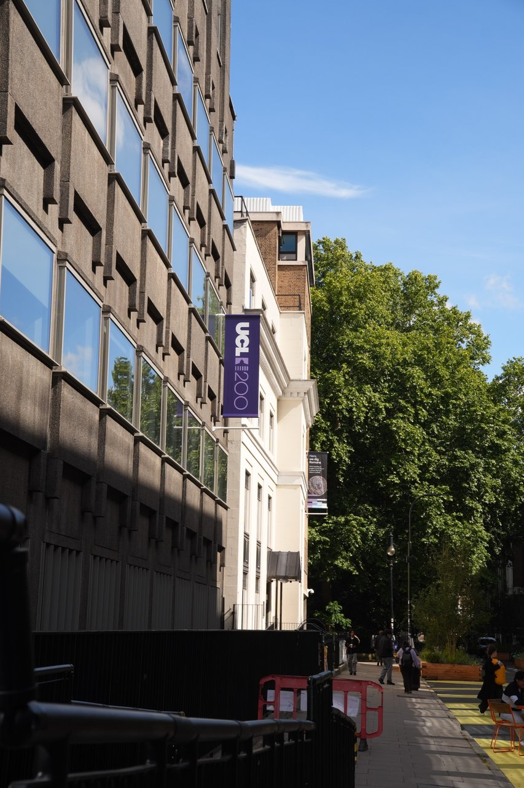
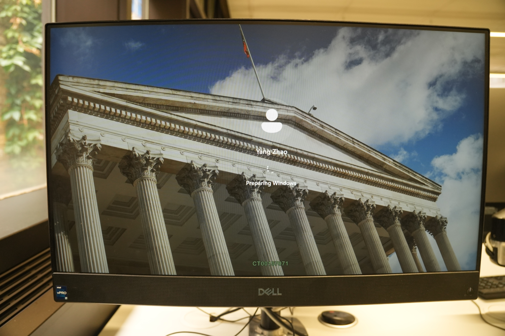
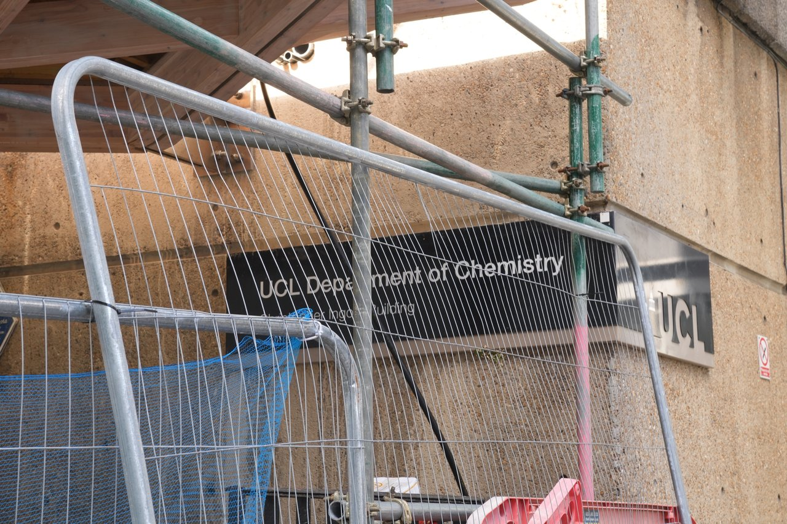
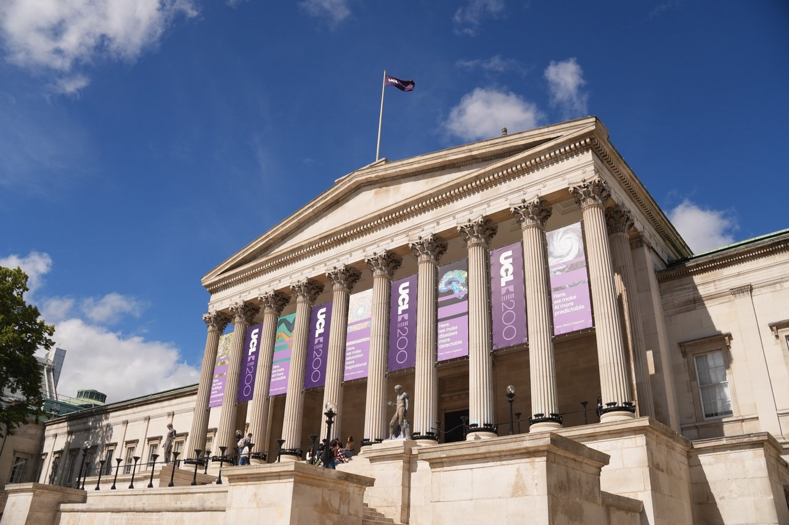
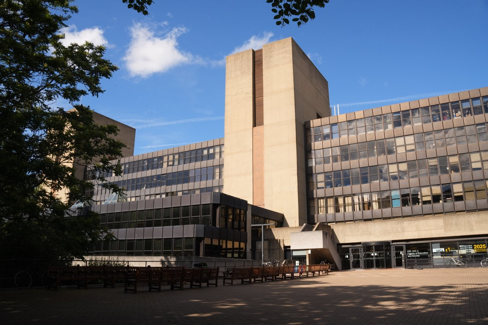
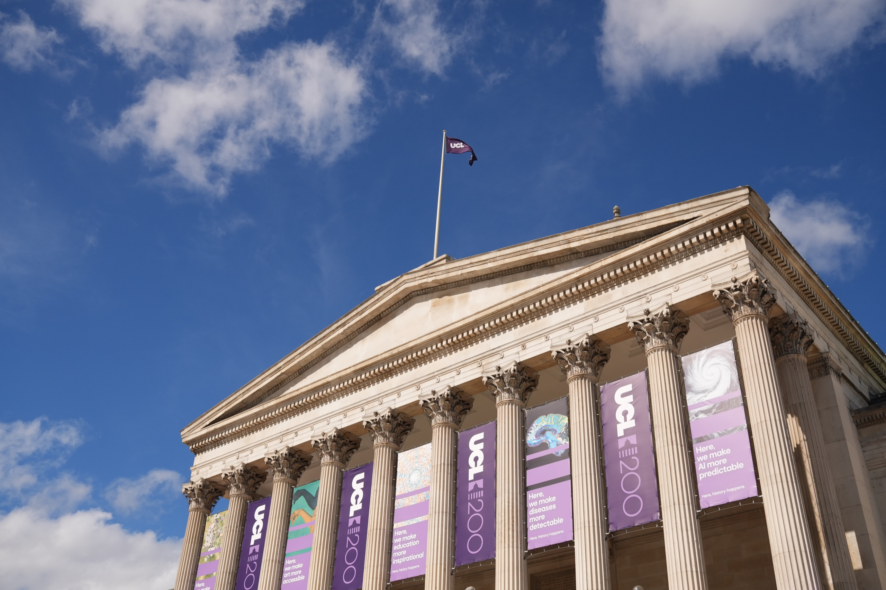
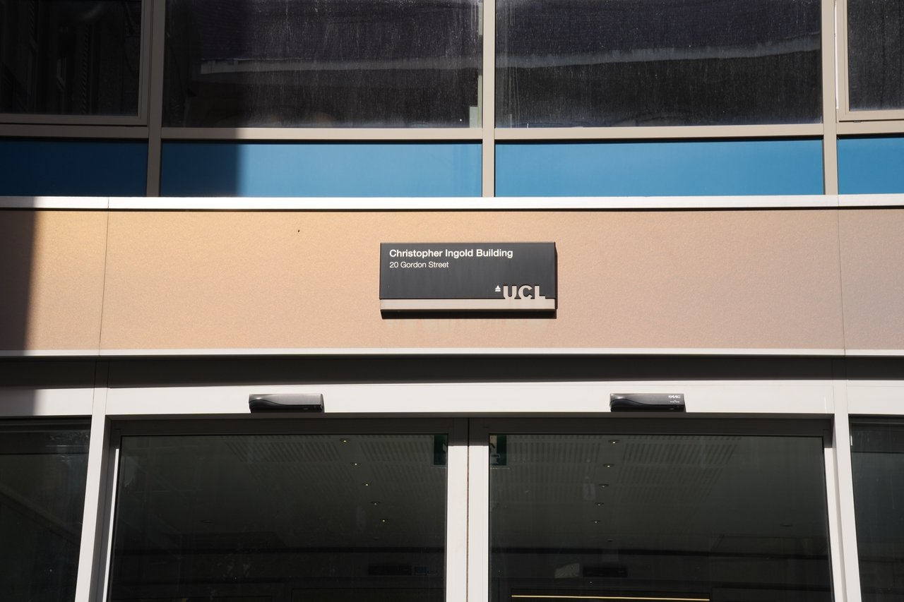
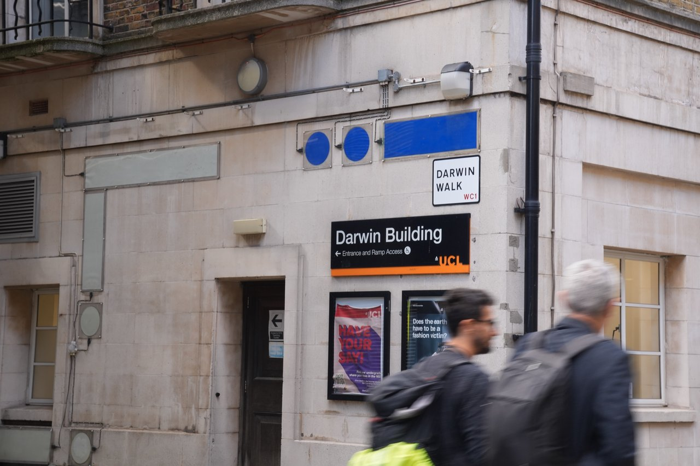
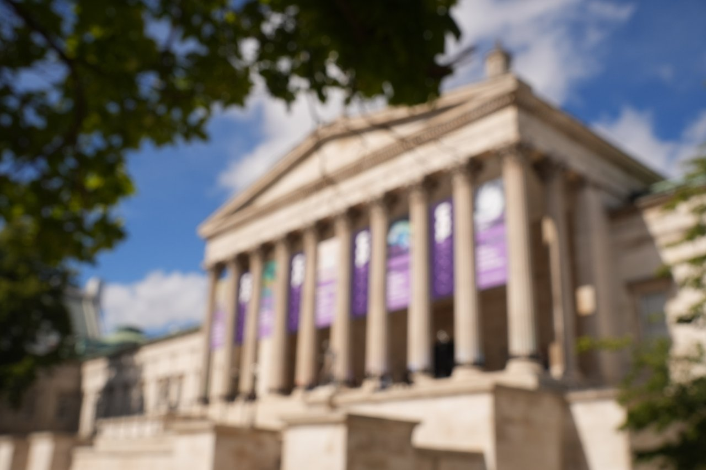
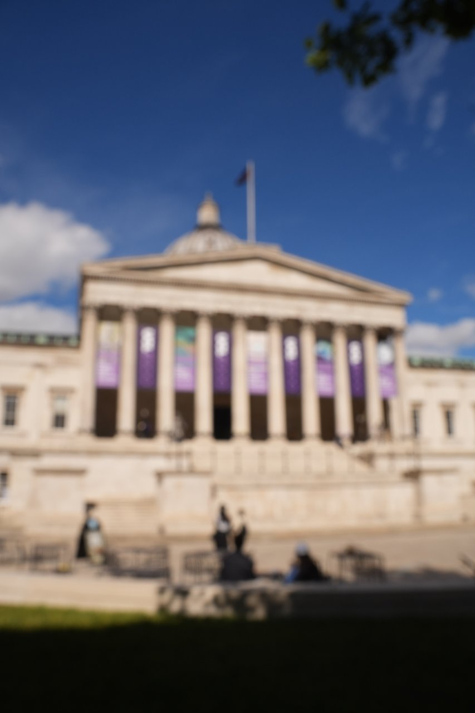

Interlude
（间页文字占位——画册翻到一半，可以有一页只放几句话。这里将来写什么、要不要保留，都由你定。）






2026 · University College London
这组照片全部拍摄于 2026 年 6 月 12 日，这是我学生证过期的最后一天。我特意来了一趟，把这三年我走过的角角落落重温一遍，尽管 UCL 我已经熟悉到没什么可拍的了，可是还是拍了许多张主楼的照片。





（间页文字占位——画册翻到一半，可以有一页只放几句话。这里将来写什么、要不要保留，都由你定。）




